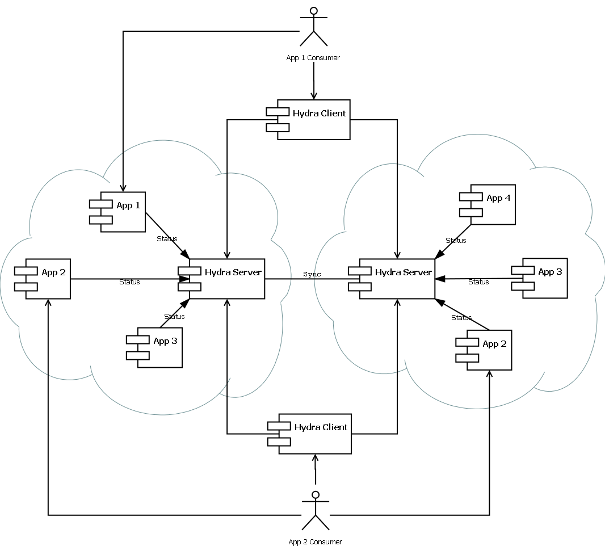
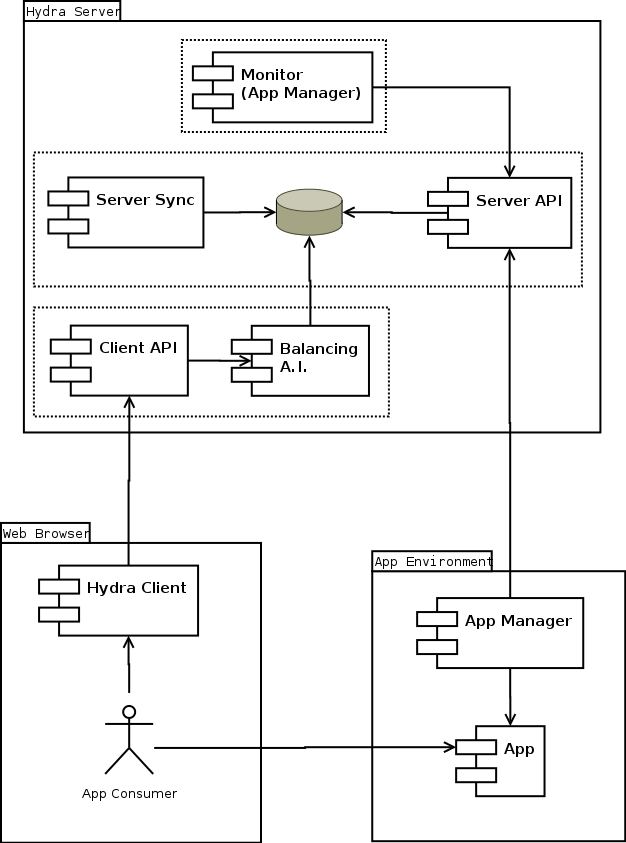

Multi-cloud application discovery, management and balancing.


The app manager is in charge of check and monitor one or several servers and update the status information at one or several Hydra Servers using the restful server AP.
The basic functionality is to notify to one Hydra Server when an application is Started, Stopping, or Removed. In addition, it will provide information about the server health status like CPU and memory usage and any useful information like the size of the server or the prefered balance strategy.
All these information should be updated periodically. If not, the hydra server will assume that the servers are shutted down. Timing parameters should be consider between “App Manager” and “Monitor” components.
This module will expose a basic restful api for Hydra Client.
Operation | HTTP action | Description |
Find a server/s for a given appID. | GET /app/{appID} | Response example: [“http://bbva.com/api”] Code 200 on success. Code 500 on error. *Maybe add some info about local balancing |
Get the list of active hydra servers. Including itself. | GET /hydra | Response example: [ “http://hydra1.com:5000”, “http://hydra2.com:6000” ] Code 200 on success. Code 500 on error. |
This module will expose a complete restful api for App Managers and other Hydra servers.
Operation | HTTP action | Description |
Register or update an app | POST /app/{appID} | Post data example: { “localStrategyEvents”: {...}, “cloudStrategyEvents”: {...}, "servers":[ { "server":"http://bbva.com/api", "status":"statusStrut", “cost”: 3, “cloud”: “amazon” } ] } Code 200 on success. Code 500 on error. |
Get all apps | GET /app/ | Response example: [{ “appID”: “app1”, “localStrategy”: {...}, “cloudStrategy”: {...}, “servers”: [{ “server”: “http://bbva.com/api”, “status”: statusStrut, “cost”: 3, “cloud”: “amazon” }, { “server”: “http://bbva.es/api”, “status”: statusStrut, “cost”: 3, “cloud”: “amazon”, }] }] Code 200 on success. Code 500 on error. |
Get one app | GET /app/{appID} | Response example: [{ “appID”: “app1”, “localStrategy”: {...}, “cloudStrategy”: {...}, “servers”: [{ “server”: “http://bbva.com/api”, “status”: statusStrut, “cost”: 3, “cloud”: “amazon” }, { “server”: “http://bbva.es/api”, “status”: statusStrut, “cost”: 3, “cloud”: “amazon” }] }] Code 200 on success. Code 500 on error. |
localStrategyEnum= {
INDIFFERENT: 0,
ROUND_ROBIN: 1,
SERVER_LOAD: 2,
CHEAPEST: 3
}
cloudStrategyEnum= {
INDIFFERENT: 0,
ROUND_ROBIN: 1,
CHEAPEST: 2,
CLOUD_LOAD: 3
}
stateEnum = {
READY: 0,
UNAVAILABLE : 1
}
statusStrut is used for provide information about both hydra servers and app servers. Example:
{
cpuLoad: 50, //Cpu load of the server 0-100
memLoad: 50, //Memory load of the server 0-100
timeStamp: 42374897239 //UTC time stamp of this info
stateEvents: {
“42374897239”: stateEnum.READY //Future state of the serve. The key is a time stamp
}
}
}
This module will retrieve and filter data from DAO according to predefined balancing patterns.
Return an adequate server for given appID. All balancing stuff is doing here and should be transparent for invoker.
Return the list of active hydra servers. Including itself. This list can be sorted or filtered according to received request params or hydra server status. These params could be request IP or user id for example.
This module will provide all necessary functions to store and retrieve persistent data.
The natural choice for database engine is MongoDB or another not relational DDBB. Even Redis with persistence could be a good choice.
There will be one big collection: “apps”. Example::
[
{
"appID":"app1",
“localStrategyEvents”: {
“42374897239”: localStrategyEnum.SERVER_LOAD //Prefered local balance strategy. Key is time stamp
}
“cloudStrategyEvents”: {
“42374897239”: cloudStrategyEnum.CHEAPEST //Prefered cloud balance strategy. Key is time stamp
}
"servers":[
{
"server":"http://bbva.com/api",
"status":"statusStrut",
“cost”: 5,
“cloud”: “google”
},
{
"server":"http://bbva.es/api",
"status":"statusStrut",
“cost”: 3,
“cloud”: “google”
}
]
},
{
"appID":"app2",
"servers":[
{
"server":"http://bbva.com/api",
"status":"statusStrut",
“cost”: 4,
“cloud”: “amazon”
},
{
"server":"http://bbva.es/api",
"status":"statusStrut",
“cost”: 2,
“cloud”: “amazon”
}
]
}
]
In addition we need to store hydra servers info (Including itseft). Hydra servers will be stored as another app with the name “hydra”.
TODO: Explain logic of get and update that goes here
Get & Update Logic
Every time a client or synchronization request an application, this app goes through a cleanup and update process.
The update process start with this steps:
The responsibility of this module is to synchronize information with other hydra servers. To accomplish that, it will periodically ask for information to other known hydra servers and fusion it with it own information.
An Hydra server will ask to all the Hydra servers registered in it’s local database and follow the same procedure described above for all the apps retrieved.
Monitor is an AppManager configured for monitor hydra process and inform itself.
var dao = new Dao();
var balancingAI = new BalancingAI(dao)
var clientApi = new ClientApi(balancingAI)
var serverSync = new ServerSync(dao)
var serverApi = new ServerApi(dao, serverSync)
TODO: Update this section
Hydra client is a js file that should be included in the web page or node project. It provides two functions:
function hydra.config([<server list>], options)
By default, the initial Hydra server will be the host serving the Hydra client file, making this function call optional on the browser, although it’s recommended to set up the servers.
This function will call to callback(error, [servers]) function with the url of the server that provides the given appID.
Internally, it will ask to the first Hydra server or use the internal cache in order to get the corresponding server url for the app and then it will call to callback function. If the application exist, the servers are sent back and served through the callback function (if the application exist, but there are no servers available, it will return an empty array). If the application does not exist, the callback will receive an error and the list will be set to null.
In case an Hydra server fails to answer (when requesting an app or new Hydra servers), the client will try again (based on the retryOnFail timeout) using the next server and moving the one that failed to the end of the list until one of the Hydra servers replies.
var app1url = []
var interval = setInterval(hydra.get(app1id, false, function(data) { app1url = data }, 60000)
…
$.ajax({
url: app1url[0] ,
sucess: {
….
});
var retry = 0
var NUM_RETRIES = 2
hydra(app1id, false, myfunction);
myfunction(app1url) {
$.ajax({
url: app1url[0] ,
sucess: {
retry = 0;
...
},
error: {
if (retry<NUM_RETRIES ) {
hydra.get(app1id, true, myfunction);
retry++;
}
}
});
}
In addition, it could actively inform to other servers for important notices in relation with apps or itself.
The synchronization is limited to siblings servers but it could use a not sibling server in case of failures or special situations.[a]
Server Sync has also a public interface for Server Api and Monitor. This interface allow to ServerSync to immediately realize about certain events and act as a consequence.
In addition it could invoke some Server Sync function in order to propagate some important information.[c]
App Dao
Change the server object from an array to an object indexed by server url to identify faster if a server does already exist.
Group servers by cloud for faster cloud balancing
[a]Germán Ramos García:
Sibling feature is not implemented
[b]Germán Ramos García:
This funtcions are not developed yet since they are not necessary in a small scenario.
[c]Germán Ramos García:
The monitor component can be replaced by an app-manager for hydra service. In this case, hydra would be a service by itself and it would take the advantages of balancing like other services. If it is used like that, the hydra collection would not be needed any more and server-sync would be simplified.